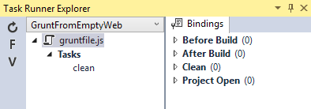
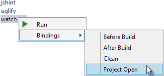

Using Grunt in ASP.NET Core
By Noel Rice
Grunt is a JavaScript task runner that automates script minification, TypeScript compilation, code quality "lint" tools, CSS pre-processors, and just about any repetitive chore that needs doing to support client development. Grunt is fully supported in Visual Studio, though the ASP.NET project templates use Gulp by default (see Using Gulp).
This example uses an empty ASP.NET Core project as its starting point, to show how to automate the client build process from scratch.
The finished example cleans the target deployment directory, combines JavaScript files, checks code quality, condenses JavaScript file content and deploys to the root of your web application. We will use the following packages:
grunt: The Grunt task runner package.
grunt-contrib-clean: A plugin that removes files or directories.
grunt-contrib-jshint: A plugin that reviews JavaScript code quality.
grunt-contrib-concat: A plugin that joins files into a single file.
grunt-contrib-uglify: A plugin that minifies JavaScript to reduce size.
grunt-contrib-watch: A plugin that watches file activity.
Preparing the application
To begin, set up a new empty web application and add TypeScript example files. TypeScript files are automatically compiled into JavaScript using default Visual Studio settings and will be our raw material to process using Grunt.
In Visual Studio, create a new
ASP.NET Web Application.In the New ASP.NET Project dialog, select the ASP.NET Core Empty template and click the OK button.
In the Solution Explorer, review the project structure. The
\srcfolder includes emptywwwrootandDependenciesnodes.
Add a new folder named
TypeScriptto your project directory.Before adding any files, let’s make sure that Visual Studio has the option 'compile on save' for TypeScript files checked. Tools > Options > Text Editor > Typescript > Project

Right-click the
TypeScriptdirectory and select Add > New Item from the context menu. Select the JavaScript file item and name the file Tastes.ts (note the *.ts extension). Copy the line of TypeScript code below into the file (when you save, a new Tastes.js file will appear with the JavaScript source).enum Tastes { Sweet, Sour, Salty, Bitter }Add a second file to the TypeScript directory and name it
Food.ts. Copy the code below into the file.class Food { constructor(name: string, calories: number) { this._name = name; this._calories = calories; } private _name: string; get Name() { return this._name; } private _calories: number; get Calories() { return this._calories; } private _taste: Tastes; get Taste(): Tastes { return this._taste } set Taste(value: Tastes) { this._taste = value; } }
Configuring NPM
Next, configure NPM to download grunt and grunt-tasks.
In the Solution Explorer, right-click the project and select Add > New Item from the context menu. Select the NPM configuration file item, leave the default name, package.json, and click the Add button.
In the package.json file, inside the
devDependenciesobject braces, enter "grunt". Selectgruntfrom the Intellisense list and press the Enter key. Visual Studio will quote the grunt package name, and add a colon. To the right of the colon, select the latest stable version of the package from the top of the Intellisense list (pressCtrl-Spaceif Intellisense does not appear).
Note
NPM uses semantic versioning to organize dependencies. Semantic versioning, also known as SemVer, identifies packages with the numbering scheme
. . . Intellisense simplifies semantic versioning by showing only a few common choices. The top item in the Intellisense list (0.4.5 in the example above) is considered the latest stable version of the package. The caret (^) symbol matches the most recent major version and the tilde (~) matches the most recent minor version. See the NPM semver version parser reference as a guide to the full expressivity that SemVer provides. Add more dependencies to load grunt-contrib-* packages for clean, jshint, concat, uglify, and watch as shown in the example below. The versions do not need to match the example.
"devDependencies": { "grunt": "0.4.5", "grunt-contrib-clean": "0.6.0", "grunt-contrib-jshint": "0.11.0", "grunt-contrib-concat": "0.5.1", "grunt-contrib-uglify": "0.8.0", "grunt-contrib-watch": "0.6.1" }Save the package.json file.
The packages for each devDependencies item will download, along with any files that each package requires. You can find the package files in the node_modules directory by enabling the Show All Files button in the Solution Explorer.

Note
If you need to, you can manually restore dependencies in Solution Explorer by right-clicking on Dependencies\NPM and selecting the Restore Packages menu option.

Configuring Grunt
Grunt is configured using a manifest named Gruntfile.js that defines, loads and registers tasks that can be run manually or configured to run automatically based on events in Visual Studio.
Right-click the project and select Add > New Item. Select the Grunt Configuration file option, leave the default name, Gruntfile.js, and click the Add button.
The initial code includes a module definition and the
grunt.initConfig()method. TheinitConfig()is used to set options for each package, and the remainder of the module will load and register tasks.module.exports = function (grunt) { grunt.initConfig({ }); };Inside the
initConfig()method, add options for thecleantask as shown in the example Gruntfile.js below. The clean task accepts an array of directory strings. This task removes files from wwwroot/lib and removes the entire /temp directory.module.exports = function (grunt) { grunt.initConfig({ clean: ["wwwroot/lib/*", "temp/"], }); };Below the initConfig() method, add a call to
grunt.loadNpmTasks(). This will make the task runnable from Visual Studio.grunt.loadNpmTasks("grunt-contrib-clean");Save Gruntfile.js. The file should look something like the screenshot below.

Right-click Gruntfile.js and select Task Runner Explorer from the context menu. The Task Runner Explorer window will open.

Verify that
cleanshows under Tasks in the Task Runner Explorer.
Right-click the clean task and select Run from the context menu. A command window displays progress of the task.

Note
There are no files or directories to clean yet. If you like, you can manually create them in the Solution Explorer and then run the clean task as a test.
In the initConfig() method, add an entry for
concatusing the code below.The
srcproperty array lists files to combine, in the order that they should be combined. Thedestproperty assigns the path to the combined file that is produced.concat: { all: { src: ['TypeScript/Tastes.js', 'TypeScript/Food.js'], dest: 'temp/combined.js' } },Note
The
allproperty in the code above is the name of a target. Targets are used in some Grunt tasks to allow multiple build environments. You can view the built-in targets using Intellisense or assign your own.Add the
jshinttask using the code below.The jshint code-quality utility is run against every JavaScript file found in the temp directory.
jshint: { files: ['temp/*.js'], options: { '-W069': false, } },Note
The option "-W069" is an error produced by jshint when JavaScript uses bracket syntax to assign a property instead of dot notation, i.e.
Tastes["Sweet"]instead ofTastes.Sweet. The option turns off the warning to allow the rest of the process to continue.Add the
uglifytask using the code below.The task minifies the combined.js file found in the temp directory and creates the result file in wwwroot/lib following the standard naming convention <file name>.min.js.
uglify: { all: { src: ['temp/combined.js'], dest: 'wwwroot/lib/combined.min.js' } },Under the call grunt.loadNpmTasks() that loads grunt-contrib-clean, include the same call for jshint, concat and uglify using the code below.
grunt.loadNpmTasks('grunt-contrib-jshint'); grunt.loadNpmTasks('grunt-contrib-concat'); grunt.loadNpmTasks('grunt-contrib-uglify');Save Gruntfile.js. The file should look something like the example below.

Notice that the Task Runner Explorer Tasks list includes
clean,concat,jshintanduglifytasks. Run each task in order and observe the results in Solution Explorer. Each task should run without errors.
The concat task creates a new combined.js file and places it into the temp directory. The jshint task simply runs and doesn’t produce output. The uglify task creates a new combined.min.js file and places it into wwwroot/lib. On completion, the solution should look something like the screenshot below:

Note
For more information on the options for each package, visit https://www.npmjs.com/ and lookup the package name in the search box on the main page. For example, you can look up the grunt-contrib-clean package to get a documentation link that explains all of its parameters.
All together now
Use the Grunt registerTask() method to run a series of tasks in a particular sequence. For example, to run the example steps above in the order clean -> concat -> jshint -> uglify, add the code below to the module. The code should be added to the same level as the loadNpmTasks() calls, outside initConfig.
grunt.registerTask("all", ['clean', 'concat', 'jshint', 'uglify']);
The new task shows up in Task Runner Explorer under Alias Tasks. You can right-click and run it just as you would other tasks. The all task will run clean, concat, jshint and uglify, in order.

Watching for changes
A watch task keeps an eye on files and directories. The watch triggers tasks automatically if it detects changes. Add the code below to initConfig to watch for changes to *.js files in the TypeScript directory. If a JavaScript file is changed, watch will run the all task.
watch: {
files: ["TypeScript/*.js"],
tasks: ["all"]
}
Add a call to loadNpmTasks() to show the watch task in Task Runner Explorer.
grunt.loadNpmTasks('grunt-contrib-watch');
Right-click the watch task in Task Runner Explorer and select Run from the context menu. The command window that shows the watch task running will display a "Waiting…" message. Open one of the TypeScript files, add a space, and then save the file. This will trigger the watch task and trigger the other tasks to run in order. The screenshot below shows a sample run.

Binding to Visual Studio events
Unless you want to manually start your tasks every time you work in Visual Studio, you can bind tasks to Before Build, After Build, Clean, and Project Open events.
Let’s bind watch so that it runs every time Visual Studio opens. In Task Runner Explorer, right-click the watch task and select Bindings > Project Open from the context menu.

Unload and reload the project. When the project loads again, the watch task will start running automatically.
Summary
Grunt is a powerful task runner that can be used to automate most client-build tasks. Grunt leverages NPM to deliver its packages, and features tooling integration with Visual Studio. Visual Studio's Task Runner Explorer detects changes to configuration files and provides a convenient interface to run tasks, view running tasks, and bind tasks to Visual Studio events.